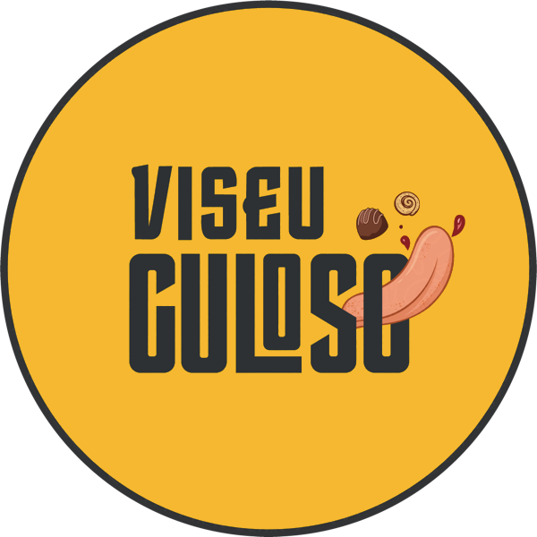
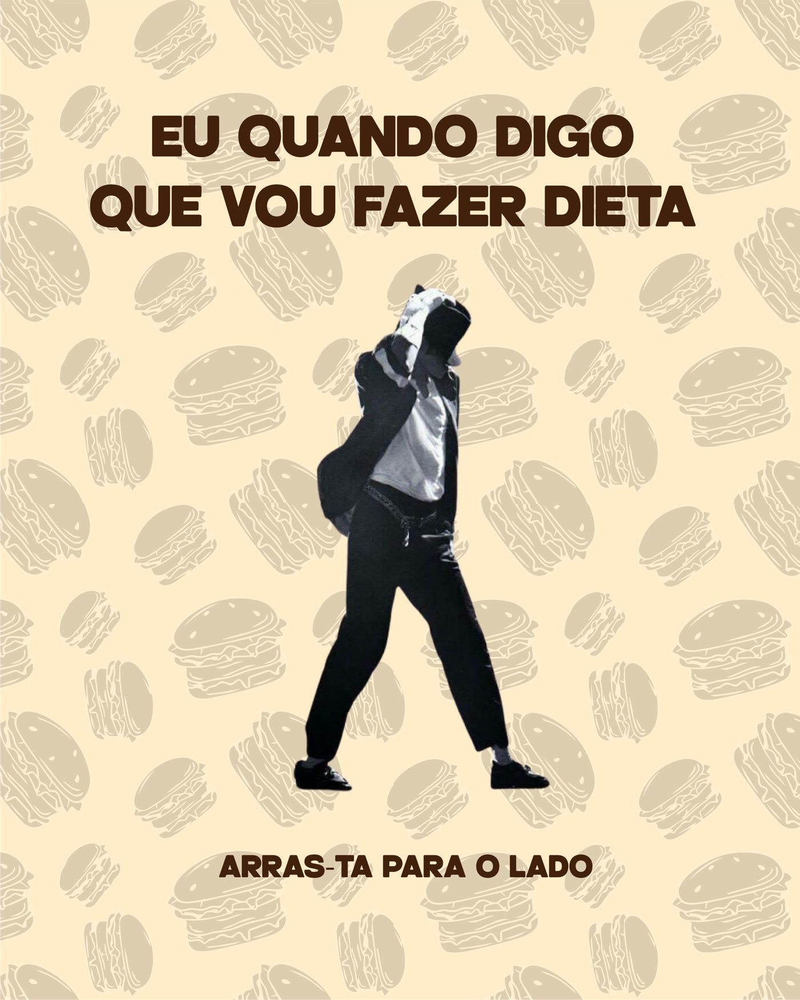
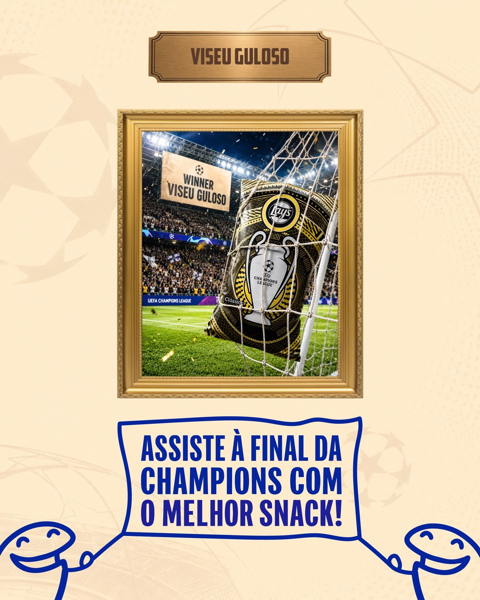
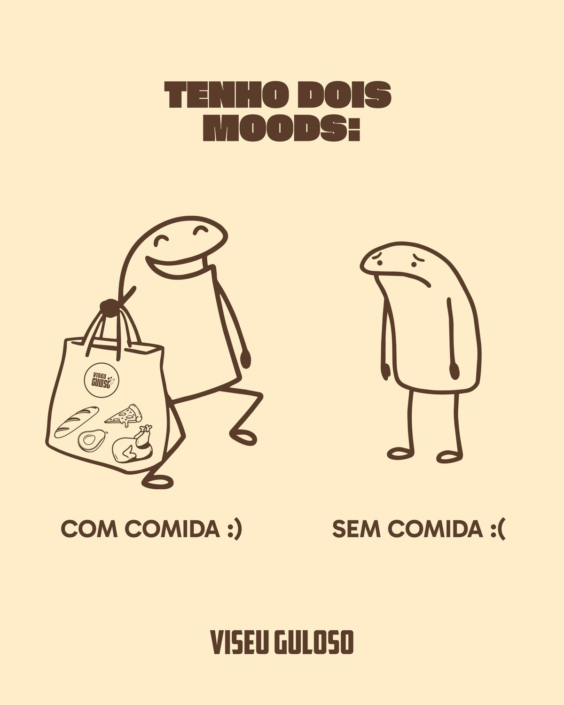
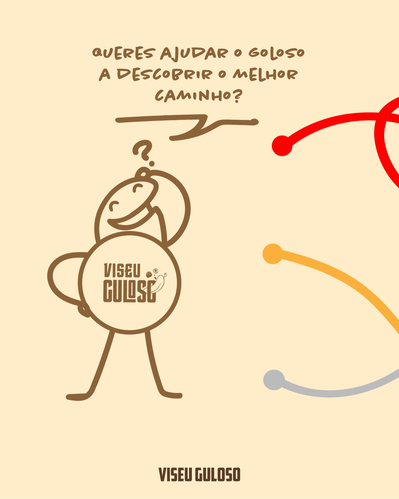
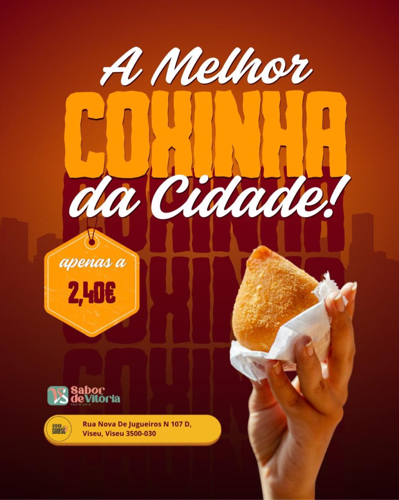
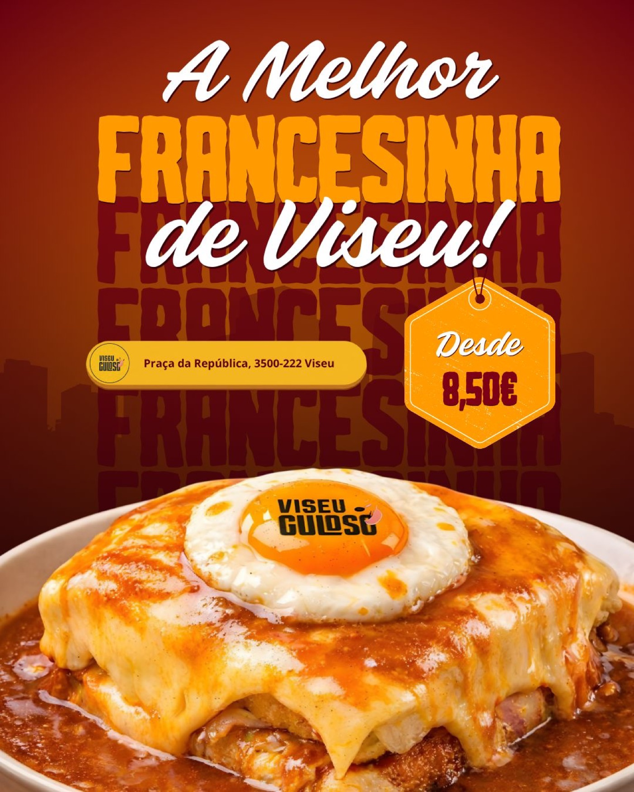
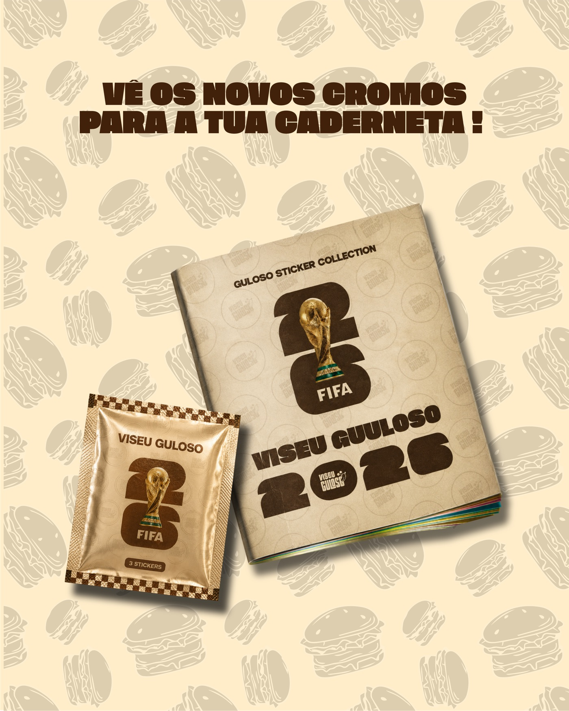
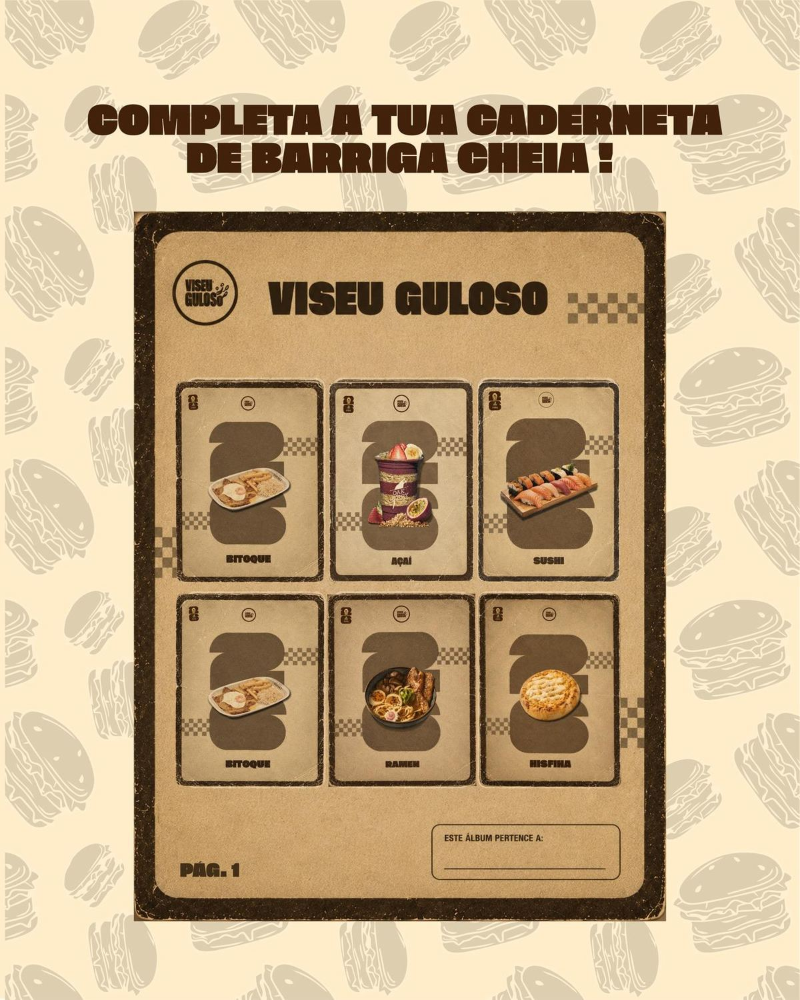

REDES SOCIAIS · BRANDING
Viseu
Guloso
Criação de marca e estratégia de marketing digital para a restauração em Viseu. Gestão de conteúdo e comunidade no Instagram, com foco em fotografia apetitosa e presença consistente.
Projeto académico "Ação Digital" (unidade curricular de Marketing Digital), desenvolvido em grupo de 3 elementos: divulgação estratégica de campanhas promocionais, ofertas exclusivas e menus de estabelecimentos de restauração no coração de Viseu.

A COLEÇÃO
Tipo de Conteúdo
Uma amostra das campanhas publicadas, cada uma com uma estratégia diferente.




PARCEIROS REAIS
Pratos da Cidade
Fotografia de produto para estabelecimentos parceiros, com preço e morada reais, publicados no feed.


APROVEITAR O TIMING
Abre o Pacote
A campanha "Guloso Sticker Collection" foi criada como uma caderneta de cromos inspirada no álbum do Mundial 2026, com cromos exclusivos. Foi aproveitada a oportunidade para engajar a comunidade fã de cromos e do Mundial no contexto da campanha.

